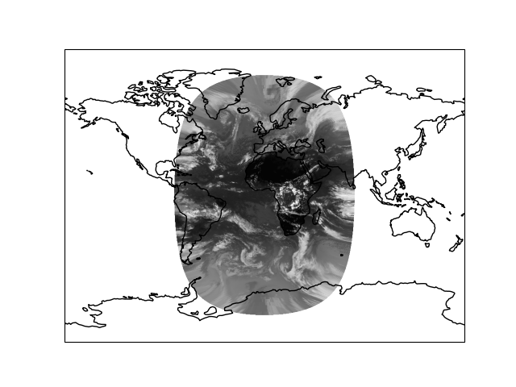

Note
Go to the end to download the full example code.
Reprojecting images from a Geostationary projection#
This example demonstrates Cartopy’s ability to project images into the desired projection on-the-fly. The image itself is retrieved from a URL and is loaded directly into memory without storing it intermediately into a file. It represents pre-processed data from the Spinning Enhanced Visible and Infrared Imager onboard Meteosat Second Generation, which has been put into an image in the data’s native Geostationary coordinate system - it is then projected by cartopy into a global Miller map.
Retrieving image...
Projecting and plotting image (this may take a while)...
from io import BytesIO
from urllib.request import urlopen
import matplotlib.pyplot as plt
import cartopy.crs as ccrs
def geos_image():
"""
Return a specific SEVIRI image by retrieving it from a github gist URL.
Returns
-------
img : numpy array
The pixels of the image in a numpy array.
img_proj : cartopy CRS
The rectangular coordinate system of the image.
img_extent : tuple of floats
The extent of the image ``(x0, y0, x1, y1)`` referenced in
the ``img_proj`` coordinate system.
origin : str
The origin of the image to be passed through to matplotlib's imshow.
"""
url = ('https://gist.github.com/pelson/5871263/raw/'
'EIDA50_201211061300_clip2.png')
img_handle = BytesIO(urlopen(url).read())
img = plt.imread(img_handle)
img_proj = ccrs.Geostationary(satellite_height=35786000)
img_extent = [-5500000, 5500000, -5500000, 5500000]
return img, img_proj, img_extent, 'upper'
def main():
fig = plt.figure()
ax = fig.add_subplot(1, 1, 1, projection=ccrs.Miller())
ax.coastlines()
ax.set_global()
print('Retrieving image...')
img, crs, extent, origin = geos_image()
print('Projecting and plotting image (this may take a while)...')
ax.imshow(img, transform=crs, extent=extent, origin=origin, cmap='gray')
plt.show()
if __name__ == '__main__':
main()
Total running time of the script: (0 minutes 4.356 seconds)